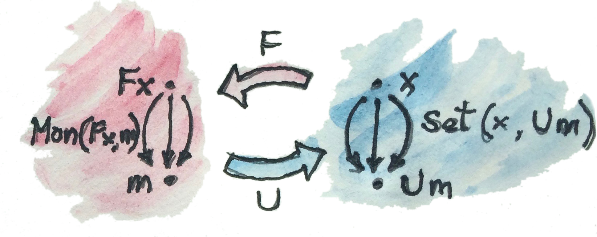

20 Adjunctionอิสระ(Free)/ทำให้ลืม(Forgetful) (Sketch)
การสร้างแบบอิสระ(Free Construction)นั้นเป็นการใช้งานของadjuntionที่มีความสามารถมาก functorอิสระนั้นถูกนิยามในฐานะadjointด้านช้ายของfunctorทำให้ลืม functorทำให้ลืมนั้นมักจะเป็นfunctorที่ค่อนข้างเรียบง่ายที่ลืมบางโครงสร้าง ตัวอย่างเช่น หลายcategoryที่น่าสนใจที่สรา้งบนset แต่วัตถุทางcategoryที่ทำการabstract setเหล่านี้ไม่มีโครงสร้างภายใน (พวมมันไม่มีสมาชิก) แต่วัตถุเหล่านี้มักจะนำความจำของsetต่าๆมาด้วย ในความหมายที่ว่าได้มีการโยง(functor)จากcategory\(\textbf{C}\)ที่ให้มาไปยัง\(\textbf{Set}\) setที่คู่กับบางวัตถุใน\(\textbf{C}\)จะถูกเรียกว่าsetภายใต้
Monoidคือวัตถุเหล่านี้ที่มีsetภายใต้(คือsetของสมาชิกต่าๆ) ได้มีfunctorทำให้ลืม\(U\)จากcategoryของmonoids\(\textbf{Mon}\)ไปยังcategoryของsetที่โยงmonoidไปยังsetภายใต้ของมัน มันก็โยงmorphismsของmonoid(homomorphisms)ไปยังfunctionระหว่างset
ผมชอบที่จะคิดถึง\(\textbf{Mon}\)ในฐานะการที่มีหลายบุคลิก ในด้านหนึ่งมันคือขุดของsetต่างๆกับการคูณและสมาชิกunit ในอีกด้านหนึ่งมันคือcategoryกับวัตถุที่ไม่มีคุณลักษณะที่โครงสร้างอย่างเดียวนั้นถูกฝังลงในmorphismที่ไประหว่างพวกมัน ทุกๆset-functionที่คงการคูณและunitไว้ก่อให้เกิดmorphismใน\(\textbf{Mon}\)
สิ่งที่ต้องอยู่ในความคิดคือ
- ได้มีหลากหลายmonoidที่โยงไปยังsetเดียวกัน
- ได้มีจำนวนmorphismแบบmonoidที่น้อยกว่า(หรือไม่สูงไปกว่า)จำนวนของfunctioระหว่างsetภายใต้ของพวมมัน
functor\(F\)ที่คือadjointด้านช้ายกับfunctorทำให้ลืม\(U\)คือfunctorอิสระที่สร้างmonoidอิสระจากsetที่เป็นตัวสร้าง(generator)ของมัน adjunctionตามจากการสร้างแบบสากลของmonoidอิสระที่เราได้พูดก่อนหน้านี้1

ในรูปแบบของhom-setเราสามารถเขียนadjunctionนี้ว่า
\[ \textbf{Mon}(Fx,m)\cong\textbf{Set}(x, Um) \]
ที่isomorhism(ที่เป็นธรรมชาติใน\(x\)และ\(m\))บอกเราว่า
- สำหรับทุกๆhomomorphismของmonoidระหว่างmonoidอิสระ\(Fx\)ที่สร้างมาโดย\(x\)และmonoidทั่วๆไป\(m\) ได้มีfunctionที่เป็นเอกลักษณ์ที่embed setของตัวสร้างอย่าง\(x\)ไปในsetภายใต้ของ\(m\) นั้นคือfunctionใน\(\textbf{Set}(x, Um)\)
- สำหรับทุกๆfunctionที่embed \(x\)ในsetภายใต้ของบาง\(m\) ได้มีmorphismของmonoidที่เป็นเอกลักษณ์ระหว่างfree monoidที่สร้างโดย\(x\)และmonoid\(m\) (ที่นี้คือmorphismที่เราเรียกว่า\(h\)ในการสร้างแบบสากลของเรา)

แนวคิดคือว่า\(Fx\)นั้นคือmonoidที่“สูงสุด”ที่สามารถถูกสร้างบนbasisของ\(x\) ถ้าเราสามารถมอลเข้าไปในmonoid เราอาจจะเห็นว่าmorphismใดๆก็ตามที่อยู่ใน\(\textbf{Mon}(Fx, m)\)embedmonoidอิสระในบางmonoid\(m\)อื่นๆ มันทำอาจจะได้โดยการ ตามหาบางสมาชิก โดยเฉพาะ การที่มันembedตัวสร้าง(generator)ของ\(Fx\)(นั้นก็คือสมาชิกของ\(x\))ใน\(m\) adjunctionแสดงว่าembeddingของ\(x\)ที่ให้โดยfunctionจาก\(\textbf{Set}(x, Um)\)ทางด้านขวา กำหนดอย่างป็นเอกลักษณ์การembedของmonoidทางด้านช้ายและในทางกลับกัน
ในHaskell ข้อมูลแบบlistที่คือmonoidอิสระ(ที่มีข้อควรระวังบางอย่าง ลองดูblog postของdan Doel2) typeแบบlist[a]นั้นคือmonoidอิสระกับtypeaที่เป็นตัวแทนของsetของตัวสร้าง(generator) ตัวอย่างเช่นtype[Char]มีสมาชิกunit(listว่าง[])และสมาชิกที่มีตัวเดียวอย่าง['a'],['b'] (ที่คือตัวสร้างของmonoidอิสระ) ส่วนที่เหลือถูกสร้างโดยการใช้งาน”การคูณ” ในที่นี้การคูณของlistสองตัวคือแค่การต่อกันของกันและกัน การต่อกันนั้นมีคุณสมบัติการเปลี่ยนหมู่และการมีunit(นั้นก็คือได้มีสมาชิกธรรมชาติที่ในที่นี้คือlistว่าง)monoidอิสระที่สร้างโดยCharนั้นคือแค่setของstringทั้งหมดของตัวอักษรในCharมันถูกเรียกว่าStringในHaskell
type String = [Char](typeนิยามชื่อที่ต่างกันสำหรับtypeที่มีอยู่แล้ว แต่ความหมายเดี่ยวกัน (type synonym))
ตัวอย่างอีกตัวที่น่าสนใจคือmonoidอิสระที่สร้างจากคือตัวสร้างเดียว มันคือtypeของlistของunitอย่าง[()] สมาชิกของมันคือ[],[()],[(), ()]และอื่นๆ ในทุกๆlistแบบนี้สามารถถูกนิยามในฐานะจำนวนธรรมชาตินั้นก็คือชนากของมัน ไม่ได้มีข้อมูลอื่นๆมากขึ้นที่อยู่ในlistของunitนี้ การต่อกันของสองlistแบบนี้ได้สร้างlistใหม่ที่ขนาดของมันนั้นคือการบวกกันของแต่ละส่วนประกอบของมัน มันง่ายมากที่เห็นว่าtype[()]นั้นisomorphicไปยังmonoidการบวกของจำนวนธรรมชาติ(กับเลขศูนย์) ที่นี้คือfunctionสองตัวที่คือinverseของกันละกัน ทำให้เห็นisomorphismนี้
toNat :: [()] -> Int
toNat = length
toLst :: Int -> [()]
toLst n = replicate n ()สำหรับให้ง่ายดาย ผมได้ใช้typeIntแทที่จะเป็นNaturalแต่แนวคิดนั้นเหมือนกัน functionreplicateสร้างlistที่มีความยาวnถูกเติมไปก่อนหน้าโดยค่าที่ให้(ในที่นี้คือunit)
20.1 ความเข้าใจบางอย่าง
สิ่งที่ตามมาคือการเสนอที่อาจจะไม่เข้มงวดมาก การเสนอต่างๆแบบนี้นั้นไกลเกินไปกว่าแบบรัดกุม แต่พวกมันช่วยก่อให้เกิดการเข้าใจ
ในการได้มาซึ่งความเข้าใจเกี่ยวกับadjunctionแบบอิสระ/ทำให้ลืม มันช่วยในการที่จะจำได้ว่าfunctorและfunctionนั้นมทารถทำบางข้อมูลหาย(lossy)โดยธรรมชาติ functorอาจจะรวบหลายๆวัตถุและmorphsism functionอาจจะรวบคู่กับหลายสมาชิกของset imageของพวกมันอาจจะรวมไปถึงแค่ส่วนๆหนึ่งของcodomainของมัน
Hom-set”โดยทั่วไป”ใน\(\textbf{Set}\)อาจจะมีทุกความเป็นไปได้ของfunction เริ่มต้นกับสิ่งที่ทำข้อมูลหายน้อยที่สุด(ตัวอย่างเช่นinjectionหรืออาจจะเป็นisomorphism)และจบลงที่functionคงที่ที่ยุบทั้งdomainไปยังสมาชิกหนึ่ง(ถ้ามันจะมีอยู่)
ผมมักจะคิดถึงmorphismในcategoryทั่วไปในฐานะสิ่งที่ทำข้อมูลหายด้วย มันคือแค่วิธีคิดง่ายๆแต่มันเป็นสิ่งที่มีประโยชน์ โดยเฉพาะเช่นในตอนที่คิดเกี่ยวกับadjunction (โดยเฉพาะสิ่งเหล่านี้ที่เป็นหนึ่งในcategoryของ\(\textbf{Set}\))
ให้อย่างเป็นทางการ เราสามารถได้แค่พูดถึงmorphismที่สามารถinveresได้(isomorphism)หรือไม่สามารถinvertibleได้ มันคือแค่ว่าแบบหลังที่อาจจะถูกคิดถึงในฐานะสิ่งทำบางข้อมูลหาย ก็ได้มีแนวคิดของmorphismแบบmonoและepiที่สามารถถูกgeneralizeของแนวคิดของinjective(ไม่สามารถถูกรวบได้)และsurjective(คลุมไปยังทั้งcodomain)function แต่มันเป็นไปได้ในการมีmorphismที่เป็นทั้งmonoและepiแต่ยังไม่สามารถinvertibleได้
ในadjunctionของ\(\text{Free}\vdash\text{Forgetful}\) เราได้มีcategoryที่จำกัด\(\textbf{C}\)มากกว่าในด้านช้ายและcategory\(\textbf{D}\)ที่จำกัดน้อยกว่าทางด้านขวา morphismใน\(\textbf{C}\)นั้น”น้อยกว่า”เพราะว่าพวกมันต้องดำรงไว้ของบางโครงสร้าง ในกรณีของ\(\textbf{Mon}\) พวกมันต้องการที่จะดำรงไว้ของการคูณและunit morphismใน\(\textbf{D}\)ไม่ต้องที่จะดำรงไว้กับโครงสร้างมานัก ดังนั้นได้มีพวมมันที่“มากกว่า”
ในตอนที่เราใช้งานfunctorทำให้ลืม\(U\)ไปยังวัตถุ\(c\)ใน\(\textbf{C}\) เราคิดถึงมันในฐานะการแสดงให้เห็น”โครงสร้างภายใน”ของ\(c\) ในความเป็นจริงแล้ว ถ้า\(\textbf{D}\)คือ\(\textbf{Set}\) เราคิดถึง\(U\)ในฐานะการนิยาม(โครงสร้างภายในของ\(c\))setภายใต้ของมัน (ในcategoryทั่วๆไป เราไม่สามารถที่จะพูดเกี่ยวกับข้างในของวัตถุนอกเหนือไปจากผ่านการเชื่อมต่อไปยังอีกวัตถุ แต่ที่นี้เราแต่ทำแบบคร่าวๆ)
ถ้าเราโยงสองวัตถุ\(c'\)และ\(c\)โดยการใช้\(U\) โดยเท่าไปเราคาดหมายว่าการโยงของhom-set\(\textbf{C}(c',c)\)เราจะครอบคลุมแค่subsetของ\(\textbf{D}(Uc',Uc)\) ที่ก็เพราะว่าmorphismใน\(\textbf{C}(c',c)\)ต้องการที่คงไว้ซึ่งโครงสร้างเพิ่มเติมแต่ส่วนของ\(\textbf{D}(Uc',Uc)\)ไม่จำเป็นต้อง
แต่เนื่องด้วยadjunctionนั้นถูกนิยามในฐานะisomorphismของhom-setเฉพาะ เราต้องระวังเป็นอย่างมากกับการเลือกของ\(c'\)ของเรา ในadjunction \(c'\)นั้นถูกเลือกไม่ได้จากที่ใหนก็ได้ใน\(\textbf{C}\)แต่จาก(ที่อาจจะเดาได้ว่าจะเล็กกว่า)imageของfunctor\(F\)อิสระ
\[ \textbf{C}(F d, c) \cong \textbf{D}(d, U c) \]
ดังนั้นimageของ\(F\)ต้องประกอบด้วยวัตถุที่มีmorphismหลากหลายที่ไปยัง\(c\)ใดๆก็ตาม ในความเป็นจริงแล้วมันจำเป็นต้องให้จำนวนของmorphismที่คงไว้ซึ่งโครงสร้างจาก\(Fd\)ไปยัง\(c\)นั้นเท่ากับmorphismที่ไม่ได้คงไว้ซึ่งโครงสร้างจาก\(d\)ไปยัง\(Uc\) มันหมายความว่าimageของ\(F\)ต้องประกอบด้วยวัตถุที่ไร้ซึ่งโครงสร้างทั้งหมด(เพื่อที่จะไม่มีโครงสร้างให้คงไว้โดยmorphism) วัตถุที่“ไร้ซึ่งโครงสร้าง”แบบนี้นั้นถูกเรียกว่าวัตถุอิสระ

ในตัวอย่างของmonoid monoidอิสระไม่มีโครงสร้างนอกเหนือไปจากสิ่งที่ถูกสร้างโดยกฏของunitและการสลับตำแหน่ง นอกเหนือจากนั้นการคูณทั้งหมดก่อให้เกิดสมาชิกใหม่
ในmonoidอิสระ \(2*3\)นั้นไม่ใช่\(6\) มันคือสมาชิกใหม่\([2,3]\) เนื่องด้วยไม่มีการแยกแยะ(หรือการหาเอกลักษณ์/ความเหมือนกัน)ของ\([2,3]\)และ\(6\) morphismจากmonoidอิสระนี้ไปยังmonoid\(m\)อื่นๆจึงอนุญาติในมีการแยกแยะระหว่างการโยงของพวกมัน แต่มันก็okสำหรับการที่โยงทั้ง\([2,3]\)และ\(6\)(ผลคูณของพวกมัน)ไปยังสมาชิกเดียวกันของ\(m\) หรือการแยกแยะ\([2,3]\)และ\(5\)(ผลบวกของพวกมัน)ในmownoidการบวกและอื่นๆ การแยกแยะที่แตกต่างกันให้เราmonoidที่แตกต่างกัน
สิ่งนี้นำไปยังความเข้าใจที่น่าสนใจอีกกย่างหนึ่งคือmonoidอิสระแทนที่จะกระทำoperationของmonoid ได้ทำการรวมargumentsต่างๆที่ส่งไปยังมัน แทนที่จะทำหารคูณ\(2\)และ\(3\)มันทำหหารจำ\(2\)และ\(3\)ไปใยlist ความได้เปรียบของการทำแบบนี้คือการที่ว่าเราไม่จำเป็นต้องกำหนดoperationของmonoidที่เราจะใช้ เราสามารถทำการรวบรวมargumentต่างๆและในสุดท้ายทำการใช้งานoperatorไปยังผลลัพธ์ และมันเป็นที่ว่าเราสามารถเลือกoperatorอะไรที่เราทำการใช้งาน เราสามารถบวกตัวเลขหรือคูณมันหรือทำการบอกแบบmodulo 2และอื่นๆ monoidอิสระแยกการสร้างของการแสดงออกไปจากการคำนวณของมัน เราจะเห็นสิ่งนี้อีกครั้งในตอนที่เราพูดเกี่ยวกับalgebra
วิธีคิดแบบนี้สามารถขยายต่อไปยังสิ่งอื่น เป็นการสร้างแบบอิสระที่ประณีตมากกว่า ตัวอย่างเช่นเราสามารถรวบรวมการexpression treesทั้งหมดก่อนที่จะคำนวณมัน จุดเด่นของวิธีนี้คือการที่ว่าเราสามารถเปลี่ยนแปลงtreeหเหล่านี้ในการที่ให้การคำนวณเร็วขึ้นหรือใช้memoryน้อยกว่า ตัวอย่างเช่นสิ่งนี้สามารถทำได้ในการเขียนการคำนวณของmatrixที่การคำนวณแบบeager(eager evaluation)นำไปสู่การโยกย้ายarrayชั่วคราวในการเก็บผลลัพธ์ระหว่างกลาง
20.2 โจทย์ท้าทาย
- ลองพิจารณาmonoidอิสระที่สร้างจากsetที่มีสมาชิกเดีี่ยวในฐานะgeneratorของมัน ลองแสดงว่าได้มีการเทียบกันแบบหนึ่งต่อหนึ่งระหว่างmorphismจากmonoidอิสระนี้ไปยังmonoid\(m\)อะไรก็ได้และfunctionจากsetที่มีสมาชิกเดีี่ยวไปยังsetภายใต้ของ\(m\)
ดูบทที่13ที่เกี่ยวกับmonoidอิสระ↩︎